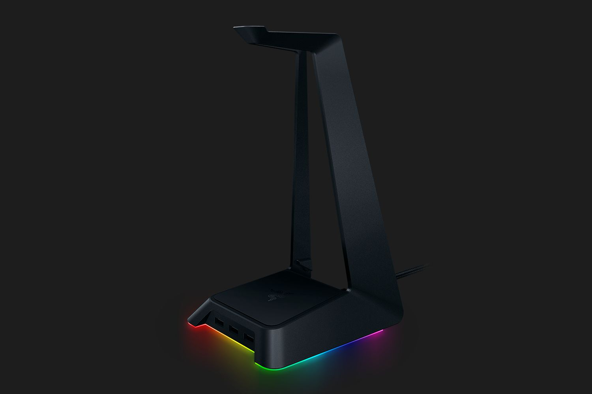

Razer Chroma SDK
Razer Synapse
 Mit der Razer Synapse Software lassen sich alle Razer Artikel konfigurieren. Dies reicht von
Tastenbelegungen und DPI / Klickgeschwindigkeit bis hin zu Detailbearbeitung der Beschleunigungskurven
oder selbst Angepassten Lichteffekten.
Die Razer Synapse Software lässt sich HIER downloaden.
Chroma Developement Kit
Das Razer Chroma Developement Kit gibt dir die Möglichkeit, dein komplettes Setup
mit Razer RGB auszustatten. Sei es nun dein Computer, deine Bildschirme oder auch dein Tisch:
Wenn du dein Setup komplett machen willst, ist RGB immer der beste Weg!
Das Razer Developement Kit gibt es momentan für 89,99 Euro zu kaufen.